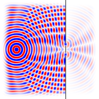
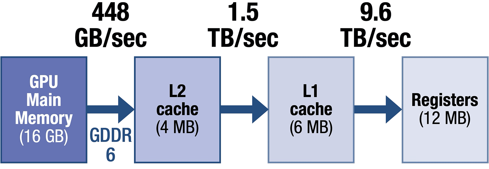
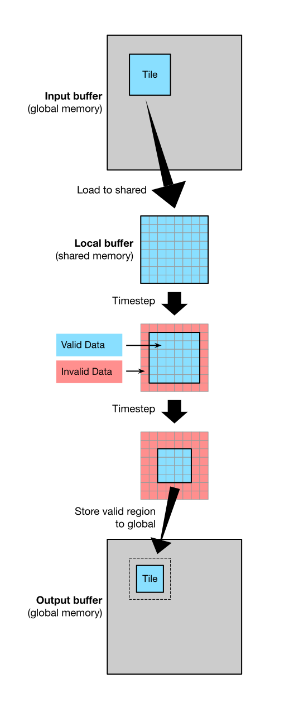

Lab 3: Wave Simulation
Prologue: Logistics
Due Dates
For this lab, you’ll be turning in the following deliverables:
-
Checkpoint: Due Monday, September 23, 11:59pm (Gradescope)
-
Final Submission: Due Friday, September 27, 11:59pm (Gradescope)
See the “Deliverables” section at the end of this document for more information on what you’ll be turning in.
Important: Note that starting this week, the checkpoints are going to become a little more substantive; for this lab’s checkpoint, you’ll be expected to have a working (but not necessarily fast) version of the naive GPU implementation from Part 1.
Starter Code
You can get the starter code for this lab by cloning the lab repository:
Introduction
Goals for This Lab
In labs 1 and 2, we implemented parallel algorithms for visualizing the Mandelbrot fractal. One of the things we noticed about our Mandelbrot workload was that it was compute-dominated – almost all the run time of the program was spent executing arithmetic instructions on variables in registers, with a negligible amount of time spent writing results to memory.
In this lab, we’ll begin looking at workloads in which the cost of accessing memory is a major constraint, and investigating how we can exploit locality to make more efficient use of the memory resources we have. To do this, we’ll be writing CUDA programs to simulate the physics of waves on GPUs, which will let us generate pictures that look like this:

(This particular image shows a simulation of the famous double slit experiment.)
Like our Mandelbrot workload, this wave simulation workload will involve repeatedly applying a sequence of math operations at every position in a 2D array. Unlike Mandelbrot, our wave simulation will require each pixel to communicate with its neighbors on every iteration. As we will see, introducing this communication between pixels will radically alter the nature of the problem.
We’ll be looking at two strategies for implementing this kind of wave simulation on GPUs:
-
A “naive” approach, which directly accesses global memory on every timestep of the simulation.
-
An optimized approach, which makes use of per-SM shared memory to reduce how often the program needs to access global memory.
Along the way, we’ll be looking at the GPU’s physical memory hierarchy in more detail, and analyzing the kinds of bottlenecks that can show up in programs that interact heavily with memory.
Background: Our GPU’s Memory Hierarchy
Our RTX A4000 GPU has a 4-level memory hierarchy, containing:
-
A main DRAM memory. On our machine, this is made up of 8 parallel GDDR6 chips, each 2 GB in capacity, with its own 32-bit interface, and running at 14 GigaTransfers per second (GT/sec). In aggregate this provides 16 GB of capacity and 448 GB/sec of bandwidth.
-
A 4 MB shared L2 cache. Loads and stores to DRAM generally all pass through this cache, and it provides about 1.5 TB/sec of bandwidth.
-
128 KB of SRAM per-SM, which can be partitioned between an L1 cache and an explicitly-managed scratchpad. This memory provides a bandwidth of 128 bytes per cycle (9.6 TB/sec aggregate across 48 SMs).
-
64 KB of SRAM per-warp scheduler used as register file storage.

The way this memory hierarchy is exposed to software is largely similar to what you are used to from mainstream CPUs, with a few key exceptions. In particular, while the shared L2 behaves like a normal cache – implicitly caching all normal loads and stores from DRAM – the per-SM L1 cache is not coherent across SMs. As a result, most normal loads and stores bypass the L1.
Why have the L1 at all, then? It is used for three things:
-
To cache CUDA thread-local memory. In particular, a CUDA kernel’s C stack is local to each CUDA thread so may safely be cached in the L1. Variables may also be explicitly declared
__local__. -
To cache read-only global memory. If the compiler knows a given pointer points to memory which will only be read, and never written, during the lifetime of a kernel, it can safely be cached. Declaring pointers as both
constand__restrict__is one way to communicate this to the compiler. It is also possible to explicitly perform L1-cached loads using the__ldgintrinsic. (Relevant discussion here.) -
As a software-managed scratchpad – that is, a region of memory that only lives in this SRAM, and must have data explicitly copied in and out by your program code. NVIDIA somewhat confusingly calls this scratchpad “shared memory,” but it is only shared across a single CUDA block. We will discuss how to use this scratchpad memory below.
Workload: Simulating the Wave Equation
The workload we’ll be studying in this lab is an algorithm for numerically simulating the wave equation, an idealized mathematical model of waves which can be used to describe diverse phenomena including sound waves in air, surface waves in water, and electromagnetic waves like visible light and radio transmissions.
At its core, the algorithm we’re trying to optimize can be described by the following Python pseudocode:
# between 100 and 2000
# between 100 and 2000
=
=
, = ,
Here, u0 and u1 are pointers to 2D float arrays of size n_cells_y by n_cells_x, and c, dt, and dx are scalar constants. The function get_damping is some arbitrary, relatively cheap-to-compute function of x and y. The actual code we’ll be working with in the lab includes a few extra complications compared to the pseudocode shown above, but the code above accounts for the bulk of the work in the program.
Just like with Mandelbrot, we’re not concerned with the mathematics of the wave equation or with how this code was derived; we’re only concerned with making this algorithm run fast. From a performance engineering perspective, here are some important observations:
-
The algorithm is divided into timesteps.
The buffersu0andu1track the state of the wave as it evolves over time. -
u0andu1swap buffers on each timestep.
At the start of each timestep,u0points to a buffer representing the second-most-recent state of the wave, andu1points to a buffer representing the most recent state. The bufferu0also serves double-duty as the output buffer for updating the state, so we swap which buffers the variablesu0andu1point to on each timestep. -
Pixels communicate with their neighbors.
On every timestep, we update the value ofu0[y, x]based on the current values ofu0[y, x]andu1[y, x], as well as theu1values of orthogonally-adjacent pixels. -
Pixels communicate only with their neighbors.
Information propagates a distance of at most one pixel per timestep. -
Pixels can be updated in parallel on each timestep.
The new value of a pixel on a given timestep does not depend on the new values of any other pixels. -
There are a lot of pixels.
For the sizes we’ll be looking at, there will be tens of thousands to millions of pixels.
(Workloads with structures similar to this one are sometimes called “stencil computations.”)
Understanding the Starter Code
The file wave.cu already contains an unoptimized reference implementation of our wave simulator written for the CPU, which you can find in the functions wave_cpu_step and wave_cpu. We recommend taking some time to familiarize yourself with the source code of those two functions before moving on.
A few points about the CPU reference implementation:
-
Extra features: sources and walls.
Going beyond the pseudocode shown in the previous section, the starter code contains extra logic for handling special “source” pixels which create waves, and “wall” pixels which reflect waves. This is necessary in order to simulate interesting scenes like the double slit experiment. You should include all the same logic in your GPU implementations. -
The
Scenetemplate parameter.
We’ve factored out some details of the simulation into the template parameterScene, which allows external code to specify various constants and static functions relevant to the simulation. You can assume thisScenetype exposes an API like the following:;You’re not responsible for understanding the implementation of the
Scenetype, only its interface. You may assume that any functions in theScenetype can be safely and efficiently called from both the CPU and the GPU. (CUDA makes that possible!)An appropriate
Scenetype will be provided to your GPU implementations as a template parameter, the same way it is provided to the CPU reference implementation. -
The buffers
u0andu1.
Like the pseudocode in the previous section, the CPU reference implementation uses variablesu0andu1to point to buffers holding the previous state and current state of the wave, respectively. It also reuses the buffer inu0as an output buffer on each timestep, and consequently must swap the buffer pointers betweenu0andu1at the end of each timestep.At the end of
wave_cpu, the function returns the pointers currently held inu0andu1, which may or may not be swapped relative to their original positions. Returning these pointers is important in order for the test/benchmark harness to know which buffer holds the final state of the wave. You should follow the same policy in your GPU implementations. -
Array layout.
We adopt a “y-major” data layout for all our arrays, so thatidx_xis the faster-moving index andidx_yis the slower-moving index.
We encourage you to experiment with changing any part of the starter code that you want, but we ask that you please restore the CPU reference implementation and the test/benchmark harness to their original state before submitting your code for grading.
Generating Animations
The starter code lets you generate animations of your wave simulations! Animations are disabled by default, but you can enable them by passing the flag -a on the command line:
The generated animations will be saved to ./telerun-out.
Part 1: Naive GPU Implementation
To begin, we’ll implement a wave simulation on the GPU which accesses memory “naively,” with no special optimizations related to memory access.
In order to implement this part, it will be helpful to be aware of a fact about CUDA which we haven’t previously discussed in Lab 1 or Lab 2, namely:
If you launch multiple kernel invocations in sequence, they are guaranteed to execute in sequence with respect to each other; each kernel invocation will finish completely before the next kernel invocation begins execution.
(Note that this is just the default behavior of kernel launches in CUDA. There are ways to opt out of it if you want to run multiple kernels in parallel. But the default behavior will be all we need for this lab.)
We care that kernel invocations launched in sequence will execute in sequence because our wave simulation workload inherently requires synchronization between pixels: we can’t start computing timestep i + 2 for one pixel until we’ve finished computing timestep i + 1 for its neighbors. The simplest way to achieve this is ensure that we don’t start computing timestep i + 2 for any pixels until we’ve finished computing timestep i + 1 for all pixels. Sequential kernel launches provide exactly the synchronization primitive we need in order to enforce such a constraint: we can simply perform one kernel launch for each timestep.
Following the idea of performing one kernel launch per timestep, we’re ready to write some code!
Deliverable: In the file
wave.cu, implement the functionswave_gpu_naive_stepandwave_gpu_naiveso that they compute the same output as the CPU reference implementation (modulo floating point error). The kernelwave_gpu_naive_stepshould compute one timestep of the algorithm, and the CPU-side launch functionwave_gpu_naiveshould launch as many invocations of that kernel as there are timesteps.
You may find it helpful to refer to the function wave_cpu_step to see how it computes the update for a single timestep, and to refer to the function wave_cpu to see how it manages the u0 and u1 pointers.
We encourage you to apply any of the parallelization strategies we saw in Lab 1 and Lab 2 to accelerate this implementation – you can partition the work across as many blocks and warps as you see fit. (Note that we only really care about performance on the “large-scale tests” in the benchmark harness; the “small-scale” tests are mainly for testing correctness.)
Tip: Multi-dimensional indices.
There’s one more feature of CUDA we haven’t mentioned yet which, while not strictly necessary to implement this kernel, might make implementing it much more convenient. That feature is multi-dimensional block and thread indices (link).
So far, whenever we’ve talked about launching CUDA kernels, we’ve always launched them using integers to specify the number of blocks and the number of CUDA threads per block, like this:
uint32_t num_blocks = /* ... */;
uint32_t block_size = /* ... */;
some_kernel<<<num_blocks, block_size>>>;
CUDA also provides a type called dim3 which allows you to factor the block count and the number of CUDA threads per block into up to 3 different dimensions, like this:
dim3 num_blocks = ;
dim3 block_size = ;
some_kernel<<<num_blocks, block_size>>>;
When you factor your launch parameters into multiple dimensions, you can access your block and thread indices along each dimension separately using the variables blockIdx.x, blockIdx.y, etc.
Note that these three-dimensional indices don’t have any particularly special significance in the hardware, and are really just a layer of notational convenience on top of a fundamentally linear index space operating behind the scenes.1 In the mapping to the underlying linear index space, x is the fastest-moving index, and z is the slowest. This means that CUDA threads with consecutive x indices typically belong to the same warp (unless you happen to be right on a warp boundary).
Analysis: Memory Access in the Naive Kernel
After implementing the code for Part 1, we can analyze it in terms of what we know about the GPU’s memory system at the hardware level:
Question 1 for final write-up: Walk through the following calculations in the context of the “large-scale tests” for the naive GPU implementation, which evaluate it on a domain of size
1601 * 1601for6400timesteps:
How does the total size of the
u0andu1buffers compare to the capacity of the L2 cache?Assuming the kernel makes no use of the L1 cache, roughly how many bytes is each launch of
wave_gpu_naive_steprequesting to load / store in the L2 cache?Of those requests to L2, roughly how many bytes’ worth of requests miss L2 and get through to DRAM?
Given the number of bytes’ worth of requests that get through to DRAM, roughly how long would the naive GPU simulation take to run if the only constraint were DRAM bandwidth?
Similarly, roughly how long would it take to run if the only constraint were L2 bandwidth?
How do those estimates compare to your naive GPU implementation’s actual run time?
Does your answer to (6) have any implications for attempts to optimize the implementation further?
Part 2: GPU Version with Shared Memory Optimizations
Our naive GPU implementation from Part 1 has a fundamental limitation: on every timestep, it has to load the entire simulation state from global memory, and store all the updates to the simulation state to global memory. Using global memory forces us to touch either the L2 cache or DRAM on every access. We know from earlier that every SM on our GPU comes equipped with a local SRAM, which is faster than either the L2 cache or DRAM. Can we somehow use it?
The SRAM on each SM is only 128 KB, so it can’t fit the u0 / u1 buffers in their entirety. One natural strategy to deal with this might be for each SM to load a subset of the simulation state into its SRAM, compute on that subset for multiple timesteps, and then store the results back to global memory. That way, the cost of accessing global memory would be amortized over multiple timesteps of the simulation. Could something like that work?
If we try to have every SM load a subset of the simulation state – say, a square tile – into its SRAM, we immediately run into a problem: updating any pixel requires knowing the values of its neighbors, and there will inevitably be some pixels on the edge of our subset whose neighbors’ values we don’t know.
However, recall that our workload has a nice locality property: information propagates at a maximum speed of one pixel per timestep. That means that even if we can’t compute updates for the pixels on the edge of our subset, we can still compute correct updates for pixels closer to the center. Over the course of multiple timesteps, the number of pixels in our subset whose values we can accurately compute will shrink, because information will have had time to propagate from the subset’s unknown neighbors towards its center. Eventually, this “valid region” in our subset will shrink to zero. But if we store the results back to global memory before then, we can extract useful work from a scheme like this.
We present a visualization below of what an implementation following this strategy could look like from the perspective of a single SM:

Our goal in this section will be to improve over our naive implementation from Part 1 by implementing a version of our GPU wave simulation which exploits a local data reuse strategy like the one shown above. Before we can do that, though, we’ll need to look at how the SM’s local SRAM resources are exposed in the CUDA programming model.
Using Shared Memory in CUDA
CUDA supports using the SRAM on each SM in two different ways: by default the entire SRAM is used only as per-CUDA-thread local memory and as an L1 cache for read-only data, but parts of it can be partitioned for use as an explicitly-addressed scratchpad that multiple CUDA threads on the SM can read and write to. For this workload, we want to be able to both read from and update the data in the SRAM over the course of multiple timesteps, so we’ll be using it in scratchpad mode.
When you’re using (part of) the SM’s SRAM in scratchpad mode, NVIDIA calls the scratchpad “shared memory,” because it’s shared at the block level between warps. The modern way2 to access shared memory in CUDA is to use “dynamic shared memory,” which requires you to declare a special variable with the syntax extern __shared__ inside your kernel:
__global__ void
and to then specify the size per block of the shared memory as an extra parameter when you launch the kernel:
uint32_t num_blocks = /* ... */;
uint32_t block_size = /* ... */;
uint32_t shmem_size_bytes = /* ... */;
my_kernel<<<num_blocks, block_size, shmem_size_bytes>>>;
When your kernel runs, the variable you declared with extern __shared__ will act like a pointer to an allocation whose size in bytes is equal to the size you provided when launching the kernel. Within each block, every CUDA thread will have access to the same shared memory.
The GPU we’re using supports shared memory sizes of up to 100 KB per block, but for historical reasons, using more than 48 KB per block requires you to opt-in using a special API:
// Run this code before your kernel launch if you want to use shmem size > 48 KB:
uint32_t shmem_size_bytes = /* ... */;
;
Finally, just like on the CPU, correctly sharing memory between multiple concurrently-executing instruction streams requires synchronization. It is not safe for one CUDA thread to read a location in shared memory which another CUDA thread could be simultaneously writing, or vice versa. To avoid these kinds of race conditions, you can use the special built-in function __syncthreads() to enforce a synchronization barrier among all CUDA threads in a block.
Implementation
Using CUDA’s shared memory and synchronization features, you have everything you need to implement a faster wave simulation on the GPU!
Deliverable: In the file
wave.cu, implement the kernelwave_gpu_shmem_multistepand the CPU-side functionwave_gpu_shmem. Use shared memory to compute multiple timesteps of simulation per kernel launch.
Note that in wave_gpu_shmem, you’re given pointers to two extra preallocated scratch buffers of size n_cells_y * n_cells_x in GPU global memory, named extra0 and extra1. Using these extra buffers is optional, but you may find one or both of them helpful while implementing your solution. The pointers you ultimately return from wave_gpu_shmem, which should point to buffers containing the state of the wave on the next-to-last and last timesteps, respectively, are allowed to point to any of the four buffers originally passed in to the function.
You may find it helpful to consider the following:
-
How many timesteps are you going to simulate per kernel launch? Can you design your kernel so that it’s easy to explore different values of that parameter?
-
How are you going to handle cases where the value of
n_stepspassed in towave_gpu_shmemis not a multiple of the number of timesteps you chose to simulate per kernel launch? -
How are you going to partition work between blocks in your kernel to ensure that every pixel in the output buffer is updated on every kernel launch? How does this interact with the shrinkage of the “valid region” relative to the size of the tile originally loaded into SRAM?
-
How are you going to partition work between CUDA threads in your kernel? Is every CUDA thread in a block going to be responsible for exactly one pixel in the tile? (You may find it helpful to initially assume one CUDA thread per tile pixel, and then generalize your implementation further after you have a basic version working.)
-
What data should live in shared memory, and what data should live in per-thread registers?
-
What data do you need to write back to global memory at the end of each kernel invocation in order to have what you need to continue the simulation with the next kernel launch?
-
How are you going to avoid out-of-bounds accesses in shared memory and global memory?
For measuring performance, we recommend only looking at the “large-scale tests” in the benchmark harness’s output.
Once your wave simulator using shared memory is working, you can answer the final question of the lab:
Question 2 for final write-up: What speedup were you able to achieve over your naive GPU implementation from Part 1? What tradeoffs did you encounter when designing and implementing your solution? Did you hit any interesting bugs along the way?
Deliverables
Checkpoint (Due Monday, September 23, 11:59pm)
For this lab’s checkpoint, we’ll be asking you to submit some preliminary code for Part 1. Ideally, this code should be functionally correct (with a relative RMSE <= 3e-2 or so vs the CPU implementation), but it does not necessarily need to be fast.
Additionally, we would like for you to make some attempt to make progress on the code for Part 2 before the live lab session on Tuesday. It’s completely fine if you end up stuck on something for Part 2 – we want people to come to the live lab with specific points of confusion in mind, so that we can help resolve them.
On the Gradescope assignment “Lab 3 Checkpoint,” (link) submit your answers to the two prompts checking in about how you’re doing with the lab.
Final Submission (Due Friday, September 27, 11:59pm)
On the Gradescope assignment “Lab 3 Final,” (link) submit your completed code for wave.cu, as a well as a PDF write-up containing your answers to Questions 1 and 2.
That’s why we deliberately didn’t discuss 3D indices in Lab 1 or Lab 2.
The more traditional – and still sometimes more convenient – approach is to use “static shared memory,” using just the __shared__ keyword without extern. Unfortunately, for historical reasons, static shared memory is subject to artificial capacity restrictions which dynamic shared memory is not.